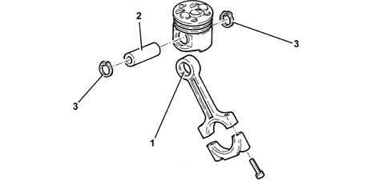
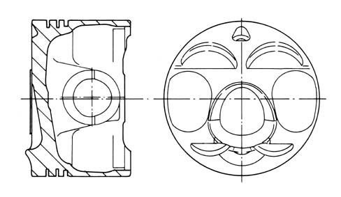
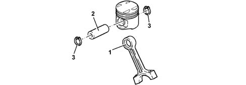
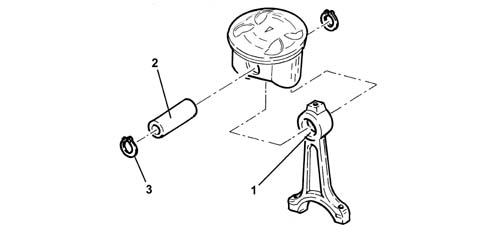
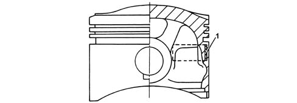
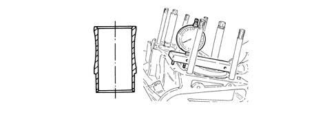
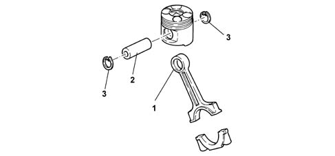
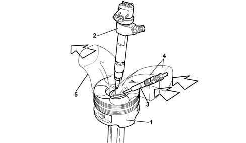

1028H PISTONS AND CONNECTING RODS
- Path
- Descriptions > 10 ENGINE UNIT > 1028 PISTONS AND CONNECTING RODS > 1028H PISTONS AND CONNECTING RODS
- Kind
- system description
- Applies to
- all engines; all production periods
- Interactive page
- https://sloeber94.github.io/elrnDB-aGt/en/#/125000262
Applies to: engines: 2.0 JTS; all production periods
CONSTRUCTION SPECIFICATIONS
CONNECTING RODS
The connecting rods are made from hardened steel with a copper bush (1) press-fitted for connection to piston gudgeon pin (2).
The floating pins are held in place by two expansion rings (3) that are housed in grooves on the piston hubs.

PISTONS
The pistons are made from aluminium alloy and are divided into three size categories with an arrow stamped on the crown to indicate engine rotation direction to ensure correct installation.
The piston crown is concave with four grooves to prevent interference with the valve heads.

Applies to: engines: 1.8 T.SPARK; all production periods
OPERATION
Connecting rods
The connecting rods are made from hardened steel with a copper bush (1) press-fitted for connection to piston gudgeon pin (2).
The floating pins are held in place by two expansion rings (3) that are housed in grooves on the piston hubs.

Pistons
The pistons in aluminium alloy with autothermal inserts (1) are divided into three size categories with an arrow stamped on the crown to indicate engine rotation direction to ensure correct installation.
The piston crown is concave with four grooves to prevent interference with the valve heads.

Applies to: engines: 3.2 V6; all production periods
CONSTRUCTION SPECIFICATIONS
Connecting rods
The connecting rods are made from hardened steel with a copper bush (1) press-fitted for connection to piston gudgeon pin (2).
The floating pins are held in place by two expansion rings (3) that are housed in grooves on the piston hubs.

Pistons
The pistons in aluminium alloy with autothermal inserts (1) are divided into three size categories with an arrow stamped on the crown to indicate engine rotation direction to ensure correct installation.
The piston crown is concave with four grooves to prevent interference with the valve heads.

Cylinder bores
These are cast iron and supported at the bottom. Coolant flows directly over their outsides for more rational heat dissipation (wet sleeves).
When refitting the engine, check that cylinder liner protrusion from the crankcase is within specified limits.

Applies to: engines: 1.9 JTD 16V; all production periods
CONSTRUCTION SPECIFICATIONS
CONNECTING RODS
The connecting rods are in hardened steel with a copper bush (1) press-fitted for connection to piston pin (2).
The floating pins are held in place by two expansion rings (3) that are housed in grooves on the piston hubs.

PISTONS
The silicon light alloy pistons with autothermic inserts are subdivided into three size categories
An OMEGA-shaped combustion chamber in the piston crown improves combustion efficiency.
There is a channel inside the piston through which the oil, sent by the jet, flows, ensuring improved piston cooling.
The piston is coupled to the pin by means of two copper alloy bushes.

1 - Piston
2 - Injector
3 - Heater plugs
4 - Air inlet
5 - Exhaust gas outlet